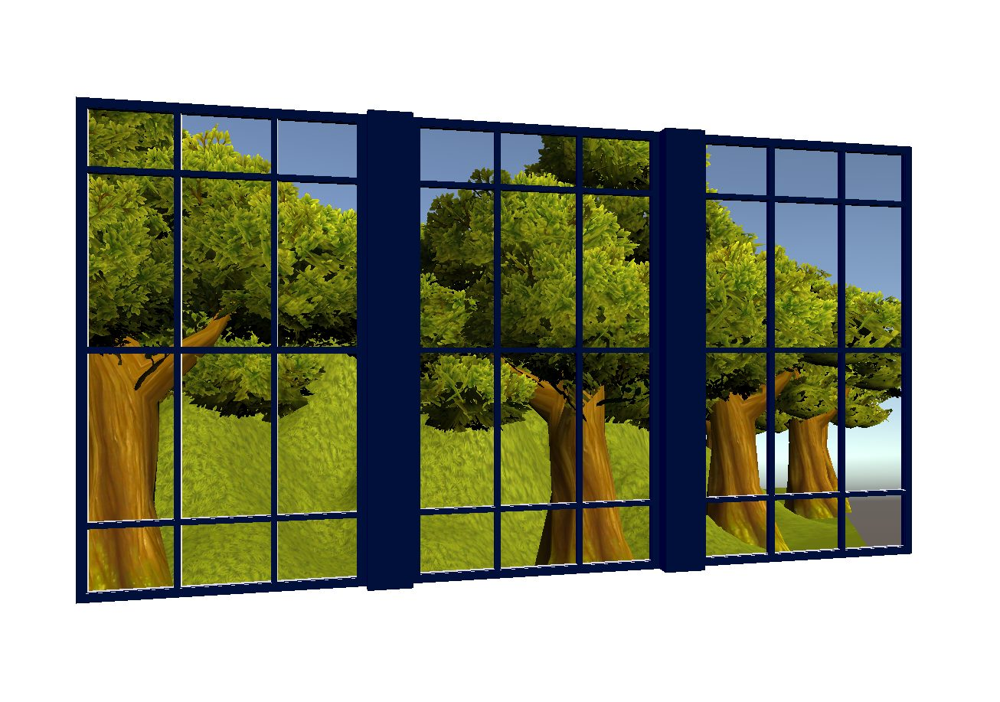
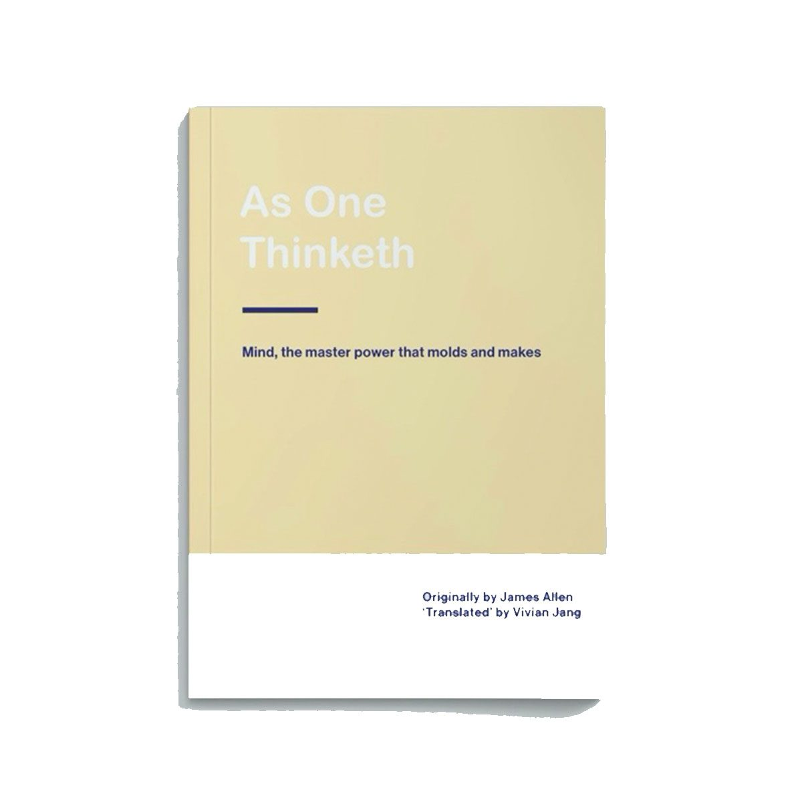
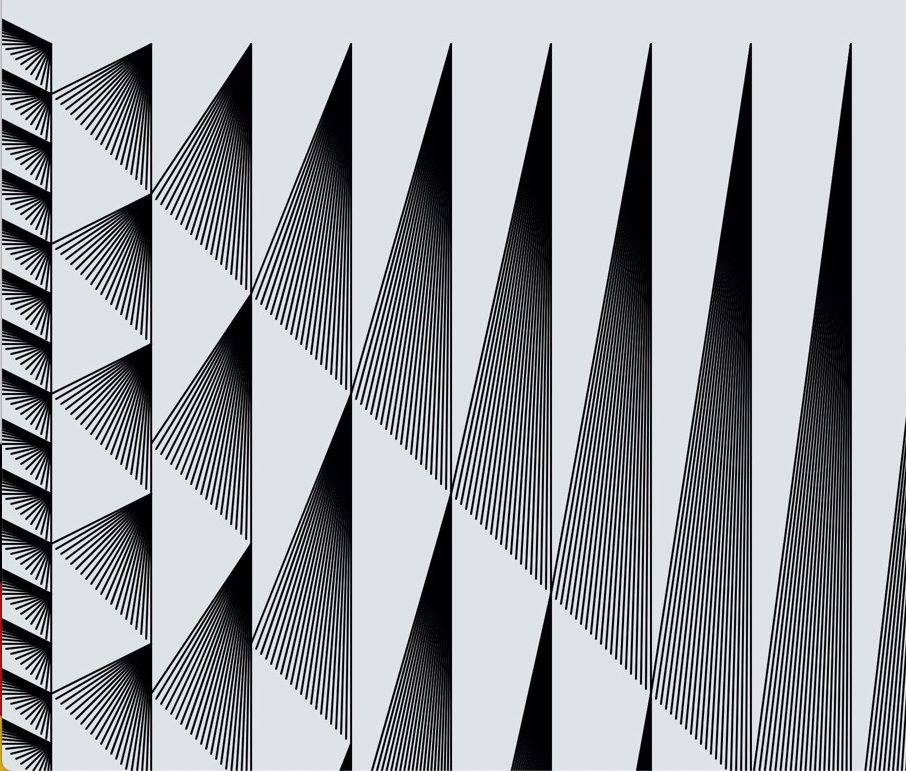
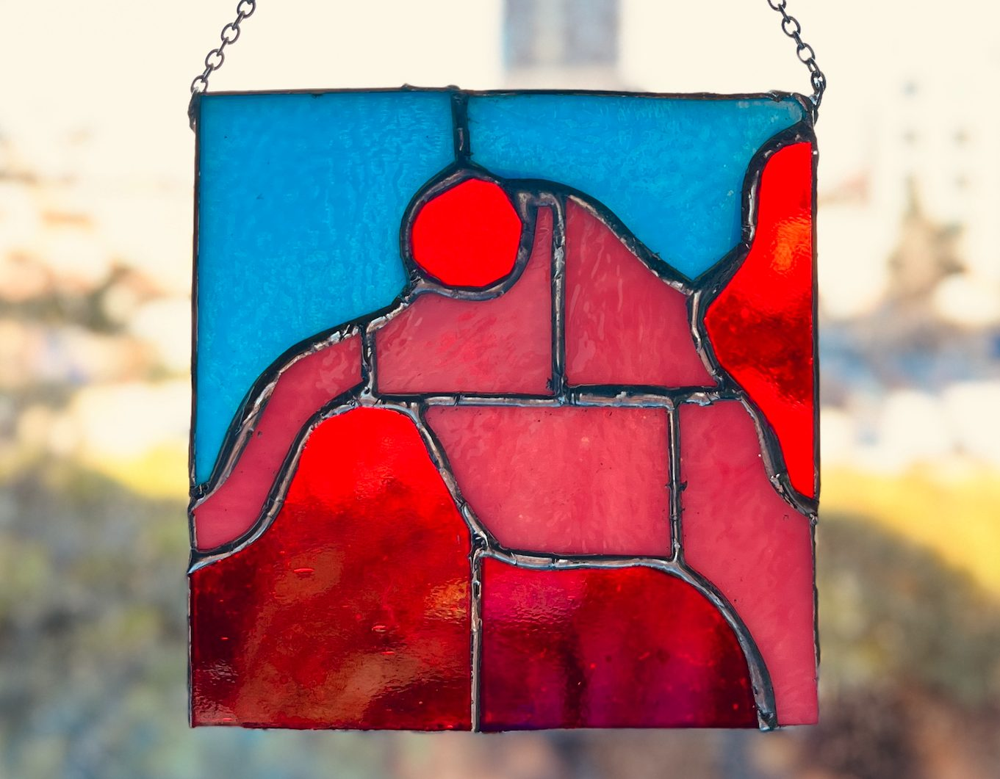

I’m a technical creative deeply interested in the intersection of art and technology.
I make holograms for my windowless den, re-author books for inclusion, and play with glass, languages and data visualization.
I currently work as a Senior Program Manager at Microsoft on the Mixed Reality HoloLens team.

Window in a Den
As One Thinketh
Programming for the Visual Arts
Stained Glass Language Play